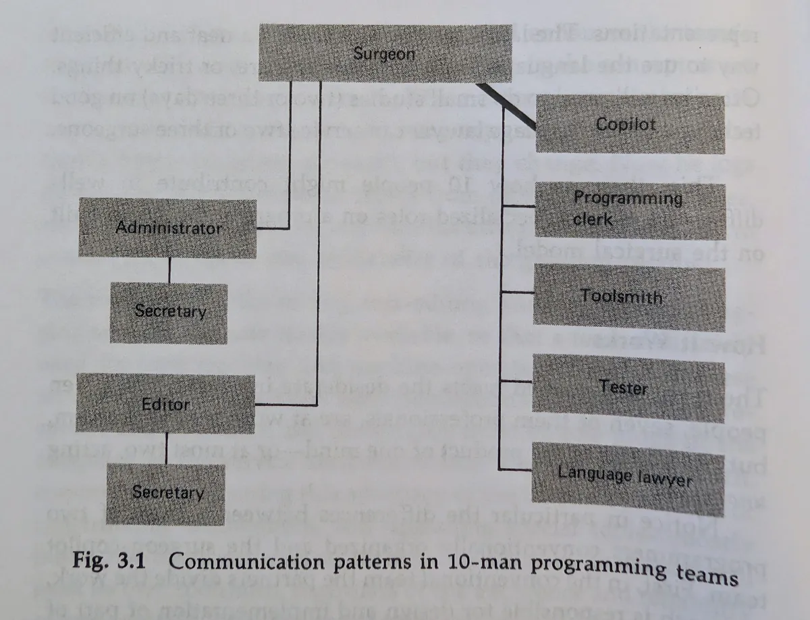

Published {% prettyDate date %}, {% readTime page %}
I revere The Mythical Man Month. The author Frederick P. Brooks, Jr. was 50 years ahead of his time. He concretely pointed out the difficulty of organizing coders into teams and the issues with creating larger organizations of engineers.
Just take a gander at this quote:
The dilemma is a cruel one. For efficiency and conceptual integrity, one prefers a few good minds doing design and construction. Yet for large systems one wants a way to bring considerable manpower to bear, so that the product can make a timely appearance. How can these two needs be reconciled?
- "Mythical Man Month", Essay "The Surgical Team", page 31
Like it could be written yesterday, no?
AI workflows have mushroomed on social media and at work, and I've been trying to cope and adapt by experimenting with agents in my workflows. As I did this, I was reminded of Brooks' idea of a surgical team, and I found that the engineering team model described by Brooks (and Harlan Mills who first proposed the model) at scale works really well with coding agents.
Let's visit what Brooks proposed in his essay, consider how this dovetails nicely with AI agents, and what this means as far as AI adoption, human presence, and quality assurance.
Giving proper credit where it is due, we must acknowledge that Brooks borrows the surgical team from Harlan Mills, an IBM research fellow and a literal "super-programmer."
But the main thrust of the surgical team argument is that a hierarchy should be adopted so that each teammate understands their role and can focus on excellence in their area. Additionally, the "chief programmer" or the "surgeon" can work without the hindrance of too many cooks in the kitchen.
Here's the diagram that Brooks provides:

The model includes a "co-pilot," who works alongside the chief programmer. How is this different than a traditional team of two developers working together? Brooks argues two points.
First, in traditional teams, the idea is that the JIRA tickets could be split up amongst many engineers, so the many split up their work and work in different spaces with different problems and different code. The pilot/co-pilot model means that both developers (and by extension everyone in the team) are devoted to the same problem, same code, in the same context, and at the same time. This sounds an awful lot like pair coding, which, to me, is actually the reason why pair coding is so successful. Two humans sharing the work space leads to "more than the sum of its parts" work!
Second, the decision hierarchy is hard to practice if you just have a gaggle of engineers. If someone is the decision maker- the pilot- the chain of command is much easier to work within. But not only that, everyone has distinct roles to specialize in. Brooks pushes this analogy far, talking about anesthesiologists and nurses. He suggests roles that cover administration, documentation, testing, computer language review, and tooling. When I read his example, it doesn't seem to be limited to just these roles.
When I use agents, I'm in the driver seat as the pilot. The AI can be many roles just by the nature of what it can do. It handles docs and claude files, if I ask it to attend to that role. It will vet the algorithms that I include or be able to address language specifics with the seeming knowledge of a javascript/css/html expert. It can handle JIRA tickets, MR/PR descriptions, test plans, and git commits. It can help me tweak config in my project or monorepo, and can also edit configuration files for itself or neovim. It can also write tests pretty well based on the guidance I give it.
Sometimes, when I describe the task I want Claude to do, Claude will spin off parallel tasks with special roles: researching, writing, vetting architectural ideas in a specific language.
I find that the surgical team emerges while I work. Claude fulfills the roles, sometimes in parallel as if there were multiple people filling each role of the hierarchy.
This seems to be the sweet spot in using AI. At work, there seems to be a consensus that the engineer is becoming more of the code architect, directing the agents to do the implementations and instantiation of our ideas.
Note that in this the human is in the loop and overseeing. The human does not walk away to get coffee (mostly). I strongly believe the human needs to be watching and understanding the flow of what the agents are doing and assembling, so the human can reality check, correct, and ultimately take responsibility for the code and the API.
I hear talk from other companies where AI is mandated and the employees are evaluated on how many tokens they use, and they're being coerced into creating large teams of "orchestrated" agents doing one-shot "full round trip" features. I hear them mandating that while one task is being run by a group of agents, the developer should be queuing up other tasks.
This is disastrous and irresponsible, recklessly YOLOing code into CI. The architect needs to oversee and have visibility on what LLMs are doing. The leader needs to make decisions and course correct along the way. You could try to argue that this is the surgical team model to its logical extension. I argue it's "hope coding"- not sustainable, and not based in reality.
The other reason I would say we can never enter the "legions of agent orchestrations" world is that I believe there is still tangible and multiplicative benefit from pair coding in this model. If the co-pilot is a human, and the two humans are running AI teams, the results are optimal.
You get the benefit of the experience of the other engineer. The engineers can both listen to their "guts" and be able to guide the overall approach and usability of what they're building. They can share in the responsibility of speaking for the code and integrating the code with other systems.
I think most importantly, this answers the question that many are asking: what about the junior engineers? If working with an AI is like working with a highly skilled junior (a framing I've heard a lot), companies are going to stop investing in the junior developers. In an effort to remove the human cost, C-level bosses will think they're saving money by axing lower level engineers.
But really, these are the kind of insane decisions that cut companies off at the knees. The question remains after an AI-motivated layoff: who will you level up if you don't keep a healthy succession and development plan in place? If you have no junior developers to train and invest in, what will happen when your senior and staff engineers aren't there?
Part of the answer is that the co-pilot could be the junior developer. Not only are they providing the second human reality check, they're also working closely with a senior/staff developer and gaining experience in their craft.
Here are some potential questions I think I can answer.
If you're thinking this, you're probably touching on a point that's very true: AI is not fundamental to good coding work. People are.
What's nice about Brooks' team model is that it's a clean way to set expectations and process for a team when using AI. The fact that AI can fill many of the roles under the captain is incidental and an interesting support for the surgical team model.
Also, you can argue a co-pilot is not strictly necessary. It's my preference, though, and I think it produces objectively better work. Still, I think Brooks' model is a great way for individuals to structure their work with agents.
It's entirely possible to retain control and keep agents accountable. I use Claude quite a bit at work, and when I ask agents to "spin off" and do some work I am very explicit about checkpoints and artifacts that they should provide me. The fact that a few agents might be working together or in parallel is not really a concern. I'm also assuming in this post that teams don't balloon past seven or eight, and that includes agents. If you're spawning dozens and dozens of agents, I have nothing to say. You probably don't agree with much I'm saying. I probably can't help you.
Often, I ask the agent or agents to formulate a plan.md that I
can read over and correct/improve. I ask for explicit coding samples of the
types of code they want to suggest. I don't let Claude commit until I'm happy
with code, and sometimes I don't let Claude commit at all.
Naw, definitely fundamental. This is not a problem that is unique to AI. This is a human systems problem.
We are finite. We can only meaningfully supervise so much. No amount of artifact wrangling, summarizing, or tricks to speed up review are going to help you past a certain number of agents. You can probably over time increase how many contexts you switch between, but you are still a mere mortal, my friend.
As Addy Osmani observes, there's a ceiling to how many agents you can reasonably work with and switch between:
The conversation about AI coding agents is almost entirely about what agents can do. It needs to also be about what humans can sustain. The ceiling isn’t a personal failure.
I think it's super interesting that AI seems to fit very well into the surgical team model. This is how I would prefer to work with my teams at work, and it seems to work really well with humans that can vouch for work and help vet and review pull requests where AI was involved. But I'm still not AI-pilled.
I'm seeing an explosion of merge/pull requests at work, and the fact that people can't vet the amount of code AI is generating is a huge portent to me. I worry about comprehension debt. I really worry that even with pair coding junior developers will not have the same experience and trials that shaped the expertise of their predecessors.
The nice thing about the surgical team model with human pilots and copilots is that there are human touchpoints built in. I feel much more at ease with a sane integration of AIs as a tool, not as the engine of development.
But I'm open, and still learning. I might have to eat my words in a year, who knows? From my limited experience, the wisdom of Brooks' surgical team works and seems to align with what we hear about across the dev world.
{% socials %}